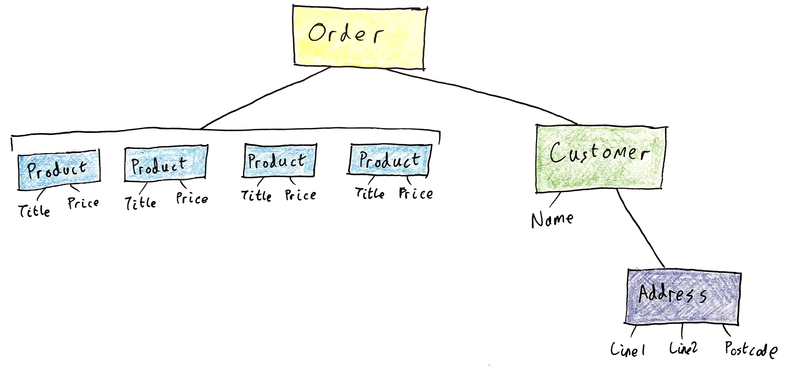
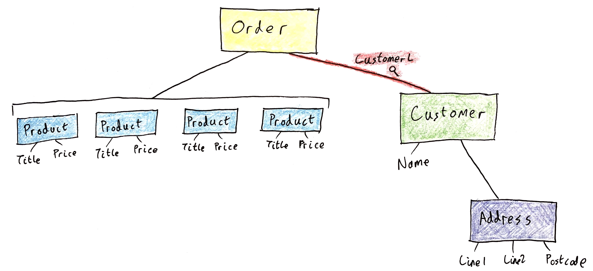
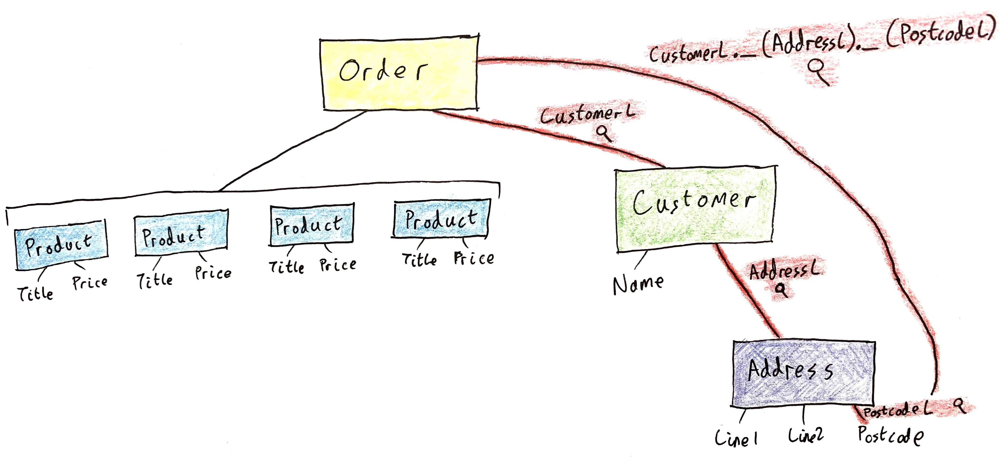
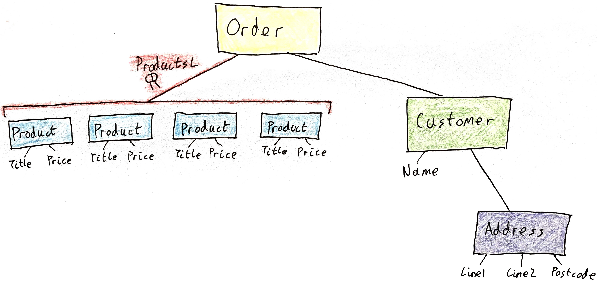
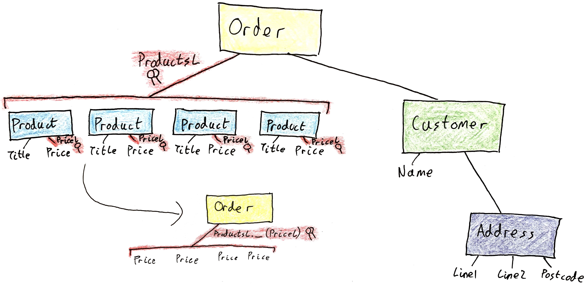
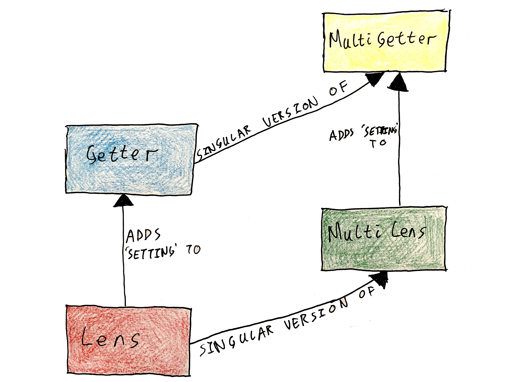

Zooming In on Field Accessors
It’s common in functional languages — and increasingly in hybrid languages like C# — to work with complex systems of immutable datatypes. For a contrived example, suppose you’re working on a billing application:
class Order
{
public Customer Customer { get; }
public ImmutableList<Product> Products { get; }
}
class Customer
{
public string Name { get; }
public Address Address { get; }
}
class Address
{
public string Line1 { get; }
public string Line2 { get; }
public string Postcode { get; }
}
class Product
{
public string Title { get; }
public decimal Price { get; }
}
(I’ve omitted the constructors; you can imagine your own.) These objects are immutable, meaning you can’t modify them directly. The way to update an immutable object is to make a copy of that object with the relevant properties changed. This turns out to be surprisingly tedious when you’re working inside a deeply nested structure:
Order UpdatePostcode(Order order/*👨🏻⚖️*/, string newPostcode)
=> new Order(
new Customer(
order.Customer.Name,
new Address(
order.Customer.Address.Line1,
order.Customer.Address.Line2,
newPostcode
)
),
order.Products
);F#’s with-syntax helps a little, but not a lot. You still have to write each name multiple times.
let updatePostcode(order : Order, newPostcode : string) : Order = {
order with customer = {
order.customer with address = {
order.customer.address with postcode = newPostcode
}
}
}This pain is caused by immutability. In an imperative setting you can say order.Customer.Address.Postcode = newPostcode;, although of course mutable data is less reliable and harder to work with overall. Rather than give up on immutability, functional programmers have invented a remarkable family of composable tools called optics for poking around inside complex datatypes. Optics are a way of describing “paths” through structures: you can compose paths together, and read and write the values at the end of those paths. I’m here today to demonstrate that C#8’s upcoming default interface methods are great at modelling optics.
Let’s start with lenses, the family member that gave the family its name.
Lenses
A lens is a first-class property for an immutable object. It’s an object with a pair of methods, a getter which retrives the value of a property and a setter which updates it. Remember, we’re working with immutable data, so the setter returns a new copy of the object.
For example, here’s a lens which focuses on a Customer’s Address.
class AddressL : ILens<Customer, Address>
{
public Address Get(Customer c) => c.Address;
public Customer Set(Customer c, Address a) => new Customer(c.Name, a);
}
So a lens picks out a single property inside a given object.
The power of lenses comes from their composability. Given a lens identifying a T2 inside a T1 (ILens<T1, T2>) and a lens identifying a T3 inside a T2 (ILens<T2, T3>), you can compose those lenses together to focus all the way from the T1 to the T3.
You can traverse any relationship in your data model by composing together a small number of individual lenses. Composing lenses is so important that I’ve given it the shortest name I can think of: _. (Readers of an eariler post of mine will know of my fondness for _.)

Compare this terse, declarative code with the tedious version of UpdatePostcode from the beginning:
Order UpdatePostcode(Order order/*👨🏻⚖️*/, string newPostcode)
{
ILens<Order, string> l = new CustomerL()
._(new AddressL())
._(new PostcodeL());
return l.Set(order, newPostcode);
}Lenses work without reference to any particular instance. (This is called pointless point-free programming.) order.Customer.Address.Postcode becomes new CustomerL()._(new AddressL())._(new PostcodeL()) — the path of properties is sort of detached from the object itself. Treating a path through a datatype as a first class value is the big idea behind lenses.
Here’s how _ is implemented. It returns a new ILens (an instance of a private class) which delegates to the two smaller lenses.
static class LensExtensions
{
public static ILens<T1, T3> _<T1, T2, T3>(this ILens<T1, T2> l1, ILens<T2, T3> l2)
=> new ComposedLens<T1, T2, T3>(l1, l2);
private class ComposedLens<T1, T2, T3> : ILens<T1, T3>
{
private readonly ILens<T1, T2> _l1;
private readonly ILens<T2, T3> _l2;
public T3 Get(T1 obj) => _l2.Get(_l1.Get(obj));
public T1 Set(T1 oldObj, T3 newVal)
=> _l1.Set(oldObj, _l2.Set(_l1.Get(oldObj), newVal));
}
}To summarise, a lens is a way to focus on a small part of a big immutable structure. They’re like a first-class version of the . and = operators: you can compose lenses together to focus deeper, and upon focusing on a location you can get and set the value at that location.
Mapping under a lens
A common pattern is to get a value from a lens, apply some sort of transformation to it, and then put it back where it was. The Map helper function wraps up this pattern:
interface ILens<T, TProp>
{
TProp Get(T obj);
T Set(T oldObj, TProp newVal);
T Map(T oldObj, Func<TProp, TProp> transformer)
=> Set(oldObj, transformer(Get(oldObj))).
}Here’s an early taste of a default interface implementation. The default, Get-then-Set, works correctly, but when you’re working with deeply stacked lenses it can be inefficient to walk the whole data structure twice. (This is especially true of multi-lenses — of which more later — which build and discard a large number of intermediate enumerables.) If Map were an extension method, it would be impossible for users to override it and provide a more efficient implementation.
Powerful as they are, these lenses don’t quite scale up to cover all of the important ways to access data. Specifically, they don’t support computed properties or lists.
Getters
How would you write a lens which focuses on a list’s Count? You can’t set Count directly - it measures the number of times you’ve added or removed something from the list. The only way to change the Count is to add or remove an item!
class CountL<T> : ILens<ImmutableList<T>, int>
{
public int Get(ImmutableList<T> l) => l.Count;
public ImmutableList<T> Set(ImmutableList<T> l, int count) => /* ??? */;
}Clearly we need to separate the “getting” and “setting” reponsibilities of ILens.
interface IGetter<T, TProp>
{
TProp Get(T obj);
}
interface ILens<T, TProp> : IGetter<T, TProp>
{
T Set(T oldObj, TProp newVal);
}We don’t lose composability by doing this. You can still compose two getters to get a getter.
static class LensExtensions
{
public static IGetter<T1, T3> _(
this IGetter<T1, T2> g1,
IGetter<T2, T3> g2
) => new ComposedGetter<T1, T2, T3>(g1, g2);
private class ComposedGetter<T1, T2, T3> : IGetter<T1, T3>
{
private readonly IGetter<T1, T2> _g1;
private readonly IGetter<T2, T3> _g2;
public T3 Get(T1 obj) => _g2.Get(_g1.Get(obj));
}
}If you compose a lens with a getter, you get a getter. This makes sense: if any part of a given path through a data structure is read-only, then the whole path must be read-only. It Just Works™ because ILens is a subtype of IGetter. Overload resolution takes care of it: you type _ and the compiler picks the right return type based on the types of _’s arguments.
Multi-lenses
ILens focuses on a single part of a structure. Its Get method returns a single TProp and its Set method takes a single TProp. This means you can’t use lenses to, for example, update the price of all the products in an order.
Enter multi-lenses, also known as traversals.
interface IMultiLens<T, TProp>
{
IEnumerable<TProp> MultiGet(T obj);
// newVals should be the same length as the list returned by MultiGet
T MultiSet(T oldObj, IEnumerable<TProp> newVals);
T Map(T oldObj, Func<TProp, TProp> transformer)
=> MultiSet(oldObj, MultiGet(oldObj).Select(transformer)).
}(Readers of an earlier post might recognise IMultiLens as a generalisation of IRewriter.) A multi-lens is like a lens which can hit more than one target. While a lens focuses on exactly one TProp inside a T, a multi-lens relaxes that restriction, focusing on zero-or-many TProps at once.
Here’s an example multi-lens which focuses on all of the Products in an Order.
class ProductsL : IMultiLens<Order, Product>
{
IEnumerable<Product> MultiGet(Order order) => order.Products;
Order MultiSet(Order order, IEnumerable<Product> newProducts)
=> new Order(order.Customer, newProducts);
}
You can compose multi-lenses, too. If you have a multi-lens which finds n T2s inside a T1, and a second multi-lens which finds m T3s inside a T2, you can build a multi-lens which finds nm T3s inside a T1. This works by looking through the second multi-lens at all n of the first multi-lens’s targets.
static class LensExtensions
{
public static IMultiLens<T1, T3> _(
this IMultiLens<T1, T2> m1,
IMultiLens<T2, T3> m2
) => new ComposedMultiLens<T1, T2, T3>(m1, m2);
private class ComposedMultiLens<T1, T2, T3> : IMultiLens<T1, T3>
{
private readonly IMultiLens<T1, T2> _m1;
private readonly IMultiLens<T2, T3> _m2;
public IEnumerable<T3> MultiGet(T1 obj)
=> _m1.MultiGet(obj).SelectMany(_m2.MultiGet);
public T1 MultiSet(T1 oldObj, IEnumerable<T3> newVals)
{
IEnumerable<T2> NewT2s()
{
foreach (var x in _m1.MultiGet(oldObj))
{
var chunkLength = _m2.MultiGet(x).Count();
yield return _m2.MultiSet(x, newVals.Take(chunkLength));
newVals = newVals.Skip(chunkLength);
}
}
return _m1.MultiSet(oldObj, NewT2s());
}
}
}MultiSet chops newVals into chunks that are the length of each group of descendants. This is safe as long as a user never calls MultiSet with a different number of elements than was returned by MultiGet.
So far we can compose multi-lenses on their own, but they don’t yet interoperate well with lenses. But note multi-lenses generalise lenses by relaxing the requirement that there should be exactly one substructure. Every lens is also a multi-lens by forgetting that there’s a single TProp. (Once again we’re relying on the assumption that the list does not change length in between MultiGet and MultiSet calls.)
interface ILens<T, TProp> : IMultiLens<T, TProp>
{
TProp Get(T obj);
T Set(T oldObj, TProp newVal);
IEnumerable<TProp> MultiGet(T obj)
=> new[] { Get(obj) };
T MultiSet(T oldObj, IEnumerable<TProp> newVals)
=> Set(oldObj, newVals.Single());
}Inheriting from IMultiLens like this is just the same trick as inheriting from IGetter. It allows you to compose a lens with a multi-lens using _; the result will be a multi-lens.
If lenses are like a first-class ., then multi-lenses are like a first-class Select. Composing a lens onto the end of a multi-lens is like Selecting a field from each element of a list, with the added power of being able to write new values to the list. Like lenses, multi-lenses are point-free: you compose a multi-lens describing a path through a datatype, then apply that multi-lens to a specific instance of the datatype.
Order TwentyPercentOff(Order order)
{
IMultiLens<Order, decimal> l = new ProductsL()._(new PriceL());
return l.Map(order, x => x * 0.8);
}
Incorporating the earlier IGetter fix, and extending IMultiLens upwards in parallel, leaves us with the following hierarchy.
interface IMultiGetter<T, TProp>
{
IEnumerable<TProp> MultiGet(T obj);
}
interface IMultiLens<T, TProp> : IMultiGetter<T, TProp>
{
T MultiSet(T oldObj, IEnumerable<TProp> newVals);
T Map(T oldObj, Func<TProp, TProp> transformer)
=> MultiSet(oldObj, MultiGet(oldObj).Select(transformer));
}
interface IGetter<T, TProp> : IMultiGetter<T, TProp>
{
TProp Get(T obj);
IEnumerable<TProp> MultiGet(T obj)
=> new[] { Get(obj) };
}
interface ILens<T, TProp> : IGetter<T, TProp>, IMultiLens<T, TProp>
{
T Set(T oldObj, TProp newVal);
T MultiSet(T oldObj, IEnumerable<TProp> newVals)
=> Set(oldObj, newVals.Single());
}
Default Interface Implementations
The code above makes central use of default interface implementations, so it’s probably time to talk about what they are.
In C#8, interfaces won’t just be type declarations any more. You’ll be allowed to write code in an interface method, to function as the default implementation of that method. Typically it’ll be written in terms of the other methods on the interface, like an extension method. They differ from extension methods, however, in that they are virtual. If an implementing class has a better (faster, typically) way of implementing the operation, it’s free to override it.
Here’s an example. How would LINQ’s design look different if default interface methods had been around at the time? Today’s Count method, an extension method, works in linear time by counting up all of the elements of the input IEnumerable.
public static int Count<T>(this IEnumerable<T> source)
{
var count = 0;
foreach (var _ in source)
{
count++;
}
return count;
}However, there are certain implementations of IEnumerable which can count themselves much faster than that:
class List<T> : IEnumerable<T>
{
private T[] _array;
private int _count;
// ...
public int Count => _count;
}The real Count extension method takes a fast path when its argument happens to be an ICollection, but that doesn’t scale well. Not every IEnumerable which admits a fast Count can also implement ICollection — for example, an immutable collection can’t implement the void Add(T item) method.
If LINQ had been designed not as a collection of extension methods but as a collection of default interface methods, it’d be possible to override Count in an extensible way:
interface IEnumerable<T>
{
IEnumerator<T> GetEnumerator();
int Count()
{
var count = 0;
foreach (var _ in source)
{
count++;
}
return count;
}
// other methods like Select etc
}
class List<T> : IEnumerable<T>
{
private T[] _array;
private int _count;
// ...
// override the default version from IEnumerable
public int Count() => _count;
}Interfaces with default methods are somewhat like abstract classes with virtual methods. The main difference is that a class can implement multiple interfaces, while it can only derive from one class. So default interface implementations amount to a form of multiple inheritance! (This provoked much whingeing in the discussion on GitHub.)
The optics library I’ve outlined above makes central use of multiple inheritance. ILens inherits its MultiGet implementation from IGetter and its Map implementation from IMultiLens. So it wouldn’t work with abstract classes; before C#8 we wouldn’t have been able to write this program. Default interface implementations add new expressive power to the language.
Production-Worthiness
Lenses are very useful in functional languages, but I would not recommend you use them in practical C#, even after the release of C#8. When you stand it next to Haskell’s lens library, the API I outlined above has a number of significant shortcomings.
Performance. The big one! Accessing a field is such a common operation that it’d better be fast. The
.operator (order.Customer.Address.Postcode) is very fast on the CLR — just a pointer hop. Composed lenses, on the other hand, are tree-shaped objects, and callingGetmeans traversing that tree with a interface method call at each level. I ran some rudimentary benchmarks and found deeply nested lenses to be orders of magnitude slower than equivalent lensless code.The
lenslibrary sidesteps this performance issue by leaning on Haskell’s optimising compiler.lenshas been carefully designed to be easy for GHC to optimise, and the result is that GHC generally produces identical machine code for equivalent lensy and lensless functions.Code generation. Almost all of the atomic lens classes you’d write for a business system are pure boilerplate — exactly the sort of thing you’d expect a machine to write. You should be able to define an object, perhaps mark it up using an attribute, and get on with using lenses into that object in the rest of your program, with Intellisense support. You shouldn’t ever need to see a lens’s source code. Roslyn, the C# compiler, has no facilities for compile-time code injection like this. A lens library could bundle a source code generator, perhaps using Roslyn’s API, which users run ahead-of-time — many ORMs do this — but that’s a much less compelling user experience.
This may be a good use case for F#’s type providers. (In any case F# places more emphasis on immutability than C#, making lenses a more natural fit in the first place.) Presently you can’t use a type provider to generate code based on another type (though it appears to be planned), and there don’t seem to be plans to support multiple inheritance in the F# source language. In principle one could implement the hierarchy in C# and consume it from an F# type provider.
- Two ergonomic complaints regarding C#’s support for generics:
Type inference. C# has only minimal support for type inference. This makes generic lenses unpleasant to use. The following lens picks out a
KeyValuePair’sValue:class ValueL<K, V> : ILens<KeyValuePair<K, V>, V> { public V Get(KeyValuePair<K, V> kvp) => kvp.Value; public KeyValuePair<K, V> Set(KeyValuePair<K, V> kvp, V val) => new KeyValuePair<K, V>(kvp.Key, val); }You can’t use
ValueLwithout explicitly mentioning the concrete type parameters at which you’re using it:Ideally the compiler would be able to deduce the
<string, int>part by noticing that we’re using it on aKeyValuePair<string, int>. This is difficult to implement in a subtyping-based language, though.Generic type aliases. The most general formulation of lenses actually has four type parameters:
ILens<in S, out T, out A, in B>! This is to support lenses into generic types, allowing you to change the type of the resulting structure by writing a different type into the lens. (new ValueL().Set(new KeyValuePair<string, string>("foo", "bar"), 3)should return aKeyValuePair<string, int>— that is, a newKeyValuePairwith a different type to the original.)The old
ILens<S, A>is then equivalent toILens<S, S, A, A>. Ideally we’d be able to define a type alias, so that you can typeILens<S, A>forILens<S, S, A, A>, but C# doesn’t support this. (A modest proposed extension tousingwould largely service this complaint, reducing the noise to a few lines of boilerplate at the top of each file.)
Noisy syntax. Haskell allows you to define custom symbolic operators, and
lensships a large collection of operators to debigulate your code.new CustomerL()._(new AddressL())._(new PostcodeL()).Get(order)is clunky in comparison to Haskell’s cute OO-styleorder^.customer.address.postcode.- Related to this concern is namespacing. Above I’ve used a convention of appending the letter
Lto lens classes (CustomerL), but that starts to break down when you have more than one property with the same name in your system. One option might be to nest the lenses inside the objects themselves and import them withusing static.
- Related to this concern is namespacing. Above I’ve used a convention of appending the letter
Platform compatibility. According to a recent announcement, default interface implementations are only going to be available on .NET Core, and won’t be in the desktop framework for the foreseeable future. As I understand it, the desktop CLR’s stringent backwards compatibility requirements make testing a wide-reaching CLR feature like this difficult and expensive. But to me, a library author, this is a very disappointing development: libraries must support the desktop CLR if they expect to have any users, so locking down features designed for library authors seems like a misfire. I’d prefer it if Microsoft just said directly that the desktop framework is being sunsetted — that way I’d at least have some ammunition for GitHub issues.
All that said, there are a couple of things which I find preferable about this design when compared to lens. Haskell doesn’t feature subtyping directly, so lens uses a clever function-based encoding of its type hierarchy, using the type class solver to handle the various subtype relationships. Encoding lenses as functions is partly why lens is so fast, but it does make for a steep learning curve and notoriously confusing type errors. Using a more direct representation of subtyping means the model is clearer, and it’s easier to see how one would slot (eg) prisms or indexed lenses into the system I outlined above. What’s more, the four-parameter version of ILens I mentioned above is variously co- and contra-variant in its parameters, meaning it interoperates well with the rest of C#’s type hierarchy. In some sense these lenses are more composable than lens’s lenses.
I’d love to tell you I’ve written this up as a published library, but the shortfalls I noted above make this formulation of lenses impractical for real-world use. I’d love to hear your ideas on how to improve the situation! In the meantime, I bagsie the name OptiCS.
Comments
By Benjamin on December 6, 2018
To join the discussion, send me a pull request.